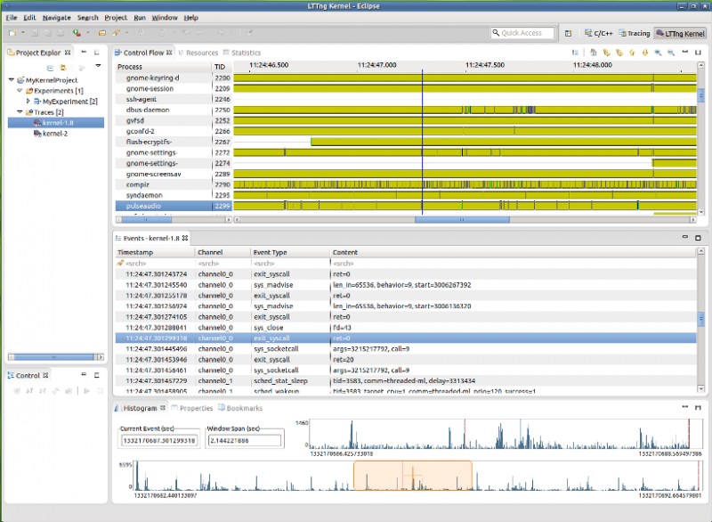
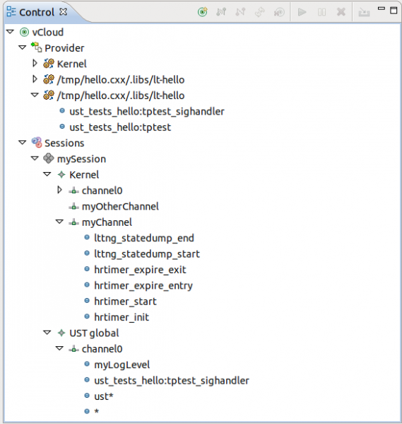
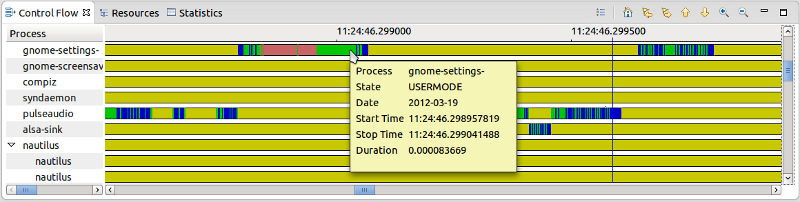
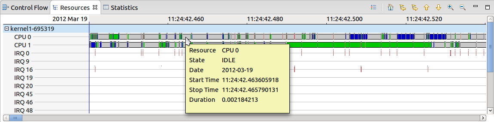

|
Release |
Resolved
|
Community Contributions |
1.0
27 Jun 2012 |
109
bugs |
Linux Tools goes 1.0 with Juno simultaneous release. This release marks our first stable API so a number of classes are no longer exported by the bundles as they are considered implementation details. |
0.10
23 Mar 2012 |
38
bugs |
[TMF] Thanks to Patrick Tasse for improvements and bug fixes for this plugin [LTTNG] Several bugs fixed by Bernd Hufmann and Francois Chouinard [RDT Proxy] Jeff Johnston contributed with a RDT proxy layer to make it possible to extend some plugins to work remotely. Corey Ashford was also highly involved in discussions and with some patches too. [Cachegrind/Helgrind] Thanks to Daniel Barbosa for fixing an important cachegrind bug and for adding the helgrind documentation. |
0.9.2
16 Feb 2012 |
5
bugs |
This was a minor bug-fix-only release that fixed a few minor bugs and added p2 data to handle the rename of certain features during the Indigo release cycle. |
0.9.1
20 Jan 2012 |
4
bugs |
This was a minor bug-fix-only release that included p2.inf files for all features and moved the dataviewer classes into a separate feature from the profiling common feature. |
0.9
2 Nov 2011 |
49
bugs |
[LTTng] Thanks to Patrick Tasse who contributed most of the new trace streaming functionality,
Mathieu Denis who worked on making the Statistics View more generic and
Daniel Thibault who contributed by testing, commenting and providing patches.
[RPM]Minoo Ziaei enhanced rpm stubby and editor while Andrew Robinson worked on command running methods.
[SystemTap]Thanks to Otavio Pontes who contributed on the launch configuration attributes, graph wizard management
and went gif hunting in his spare time.
[Valgrind]Martin Oberhuber made target Valgrind version configurable and Rafael Medeiros Teixara made an empty view a little less lonely.
|
0.8.1
20 Sept 2011 |
32
bugs |
This was a bug-fix-only release resolving issues with LTTng, Autotools, ChangeLog, Valgrind, SystemTap, and Callgraph. |
0.8
22 June 2011 |
84
bugs |
Daniel Henrique Barboza contributed support for the Valgrind Helgrind tool. John Dallaway provided a patch to improve our GProf view and some good bug reports on other components. Patrick Tasse, Alexandre Montplaisir, and Daniel U. Thibault improved our Tracing and Monitoring Framework and LTTng support with patches, bug reports, and testing. Corey Ashford assisted with OProfile plugin fixes on Power architecture machines and general OProfile interaction issues. Doug Schaefer tested non-Linux support for our GNU Autotools integration. |
0.7
16 Feb 2011 |
52
bugs |
The LTTng team improved the visualization tools and performance. All help content is maintained in Eclipse.org wiki and with Mylyn Wikitext.
.spec file and changelog editors properly show/use Mylyn hyperlinks when bug reference is detected. |
0.6
23 June 2010 |
83
bugs |
Jon Beniston
contributed some patches for the Autotools plugins. Patrick Tasse
helped improve the TMF Time Analysis Viewer. Chris Aniszczyk clarified
some API violations. Martin Gerhardy helped Xavier Raynaud implement
support for 64-bit gmon files for use with the GProf integration
plugins. |
0.5.1
12 May 2010 |
8
bugs |
Thanks to bugs filed
by Jens Seidel and Chris Conway, Jeff Johnston fixed bugs in our
Autotools component. Jeff also fixed bugs in our ChangeLog and
libhover components and included the Autotools plugin documentation
which was mistakenly missed in 0.5.0. Roland Grunberg fixed some
OProfile bugs and committed a patch submitted by Lawrie Nichols in bug #296228. As well, our
OProfile native fragment dropped its erroneously-licensed opxml
binary; users will now need to rebuild on their system which will
actually fix a few bugs people were seeing. |
0.5
18 March 2010 |
70
bugs |
Niels Thykier and
Benjamin Drung provided many patches for eclipse-build and ran test
builds to verify fixes and improvements. Anithra contributed the
SystemTap dashboard and removed the SystemTap server dependency.
Thanks to Jens Seidel and Roland Grunberg who helped test & fix
SystemTap bugs. Jens also helped with testing our Autotools
integration. |
0.4.1
21 Dec. 2009 |
5
bugs |
This was a
bug-fix-only release, resolving some issues with Autotools and
OProfile plugins. |
0.4
23 Nov. 2009 |
101
bugs |
Our Eclipse SDK
build harness, eclipse-build, would be much worse off if it weren't
for the patches and testing by Benjamin Drung, Matthias Klose, Marvin
Schmidt, and Niels Thykier. Nick Boldt once again helped us with some
release engineering issues. Thanks to users such as Jens Seidel,
Andrew Gvozdev, and PurpleFloyd for reporting some key bugs against
Autotools and testing the subsequent fixes. |
0.3
19 August 2009 |
113
bugs |
Jens Seidel helped
with Autotools and Valgrind testing, filing important bugs. Alex
Mueller guided the development of the manual control of the OProfile
daemon. Nick Boldt once again helped us with our release engineering
processes. Martin Gerhardy and Mat Booth helped getting the RPM
specfile editor to work on Windows. Andrew Niefer and Kim Moir helped
a lot with getting eclipse-build off the ground and with difficult
problems. |
0.2.1
5 June 2009 |
1
bug |
Patrick Hofer and others notified us of a bug with our Valgrind components on Debian-based systems.
|
0.2
11 May 2009 |
67
bugs |
Ed Swartz assisted in tracking down a UI blocker in the configure.ac editor.
Pedro Saraiva pointed out a localization issue with the massif plugin.
Uwe Stieber fixed a compilation problem with Eclipse 3.5, fixed the OProfile fragments, and illustrated an incorrect BREE.
Jens Seidel and Ben Konrath both filed bugs with good test cases and helped track down problems.
Uwe Stieber, Mikael Steen Springer, and Axel Mueller helped Kent Sebastian to improve the privilege escalation code for launching opxml on various Linux distributions.
Nick Boldt helped improve our automated build process.
|
0.1
23 Jan. 2009 |
11
bugs |
Alphonse van Assche contributed
many fixes for our RPM specfile editor as well as integration of
rpmlint error and warning
parsing. Phil Muldoon contributed his SystemTap
editor and helped
with ChangeLog bug fixes. Kent Sebastian picked up Keith Seitz's work
on OProfile
and worked with Elliott Baron to create a framework for profiling tools.
Elliott contributed his work on integrating the Valgrind
suite of tools
into the IDE. Alexander Kurtakov contributed many fixes to our RPM
specfile editor as well as making the initial RPM Stubby work usable.
Nick Boldt helped us immensely as we got our release engineering
processes straightened out. Jeff Johnston contributed his work on
integrating the GNU Autotools with the CDT. Jeff also contributed
his work on bridging the gap between API documentation and the CDT's
hover help with his libhover work.
|
| pre-0.1 |
69
bugs |
Prior to our 0.1 release, Remy Chi
Jian Suen helped us out with proper execution environments for our
plugins among other things. Phil Muldoon contributed his ChangeLog
plugin. Kyu Lee then contributed an editor for ChangeLog files. Keith
Seitz contributed his OProfile integration plugins. Igor Foox helped
out a great deal getting our RPM specfile editor started.
|
|
Support for LTTng 2.0
|
The main enhancement for the LTTng component is the support of the LTTng v2.0 tracer
in Eclipse. The legacy LTTng tracer (v0.x) is still available as an optional plug-in.
Here are the main characteristics of this integration:
- New tracer control function based on RSE/SSH/SFTP
- New trace format based on CTF (Common Trace Format)
- New persisted state system based on GSS (Generic State System)
- Completely re-designed Control Flow and Resources Views based on a generic Gantt widget
Refer to the User Guide
for detailed information on installation, configuration and operation.

|
|
|
Project Explorer Tracing Enhancements
|
The following features were added to the Project Explorer View (for Tracing projects):
- Keyboard accelerators
- Trace Drag&Drop
Refer to the User Guide
for detailed information on this view and its usage.
|
|
|
New LTTng Tracer Control View
|
The Control View was re-designed to interact with the LTTng 2.0 command-line
tool using RSE/SSH/SFTP connections. The control structure reflects the LTTng 2.0 session concepts.
Refer to the User Guide
for detailed information on its operation.

|
|
|
New Control Flow View
|
The Control Flow view, which displays the processes state transitions in time,
was completely re-designed based on the TMF generic Gantt widget. The zoom function was improved
and the processes are now displayed in a parent/child hierarchy.
Refer to the User Guide
for detailed information on its operation.

|
|
|
New Resources View
|
The Resources view, which displays the system resources state transitions in time,
was completely re-designed based on the TMF generic Gantt widget. The zoom function was improved.
Refer to the User Guide
for detailed information on its operation.

|
|
|
Events View Improvements
|
Hovering over the left side of the timestamp will show the event rank as a tooltip.
Also, you can now bookmark significant events in the Events View for fast
re-positionning.
Refer to the User Guide
for detailed information on its operation.

|
|
|
New CTF Parser
|
The LTTng 2.0 trace format is based on CTF (Common Trace Format). A generic, stand-alone CTF parser is
now packaged with LTTng.
Refer to the User Guide
for detailed information on how to use it.
|
|
|
New Generic State System
|
The LTTng kernel state system was completely re-designed over GSS (Generic State System), a highly-efficient
framework to integrate state systems in TMF.
|
|
|
New Gantt Widget
|
A new customizable time graph widget is included in the framework. The widget can be used to display
a tree or flat structure of entries based on a provided model, each containing their own set of time events or states.
It supports a numerical or calendar/time format for the time scale, tooltips for events or states, a state legend,
and a set of default actions. It provides mouse support for selecting, scrolling and zooming the time window.
The state colors, state names and item heights can be specified. Customized drawing code can be provided to add
decorators or specific features to the widget.
Listeners are supported to be notified of time selection, entry selection, time range modification and tree expansion events.
A time graph combo widget is available that combines a table and a time graph viewer in a single widget, with automatic tree,
scroll and selection synchronization between the two controls.
|
|
|
Miscellaneous Improvements
|
Longer description.
|
|